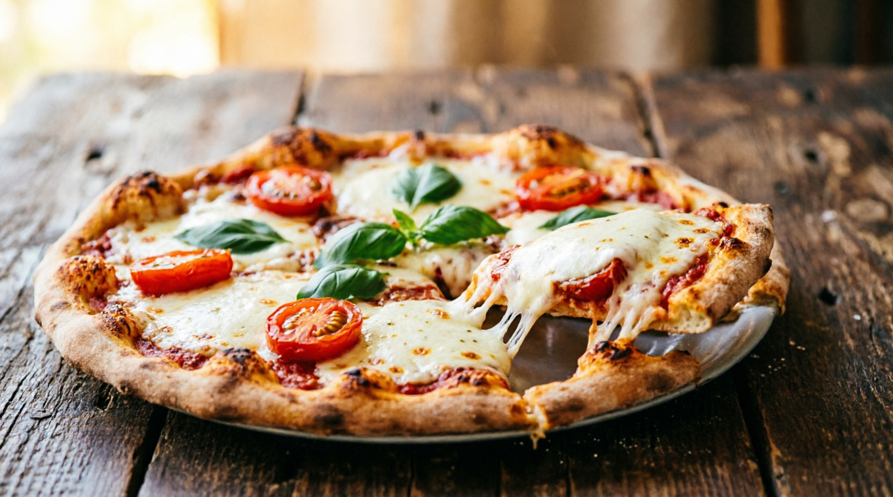

Главный плюс тирамису — это высокие вкусовые качества и способность быстро
поднимать настроение благодаря сочетанию кофе, сахара и какао. Это калорийный и питательный
десерт, который дает быстрый прилив энергии, а его нежная текстура делает его популярным выбором
для праздников и банкетов.
Оригинальный рецепт предполагает использование сырых яиц в креме. Это создает
определенный риск: от сырого некачественного яйца есть риск заразиться сальмонеллой. Чтобы этого
избежать, лучше всего использовать уже пастеризованные белки и желтки в фабричных упаковках.
Я любите тирамису, потому что это самый «честный» десерт для взрослого человека. Он дает
бодрость , расслабление и нежность , не перегружая вас чувством вины за съеденное. Это еда для
момента «только для себя», где горечь кофе и какао только подчеркивает глубину сладости.
PIZZA

Пицца — это сытное и доступное блюдо, обеспечивающее организм быстрой энергией
благодаря углеводам (тесто) и белкам (сыр, мясо). Она обладает огромным разнообразием вкусов,
удобна для еды на ходу и не требует сложной подачи. Использование натуральных ингредиентов
(томаты, зелень, качественный сыр) позволяет получить порцию антиоксидантов (ликопин) и
микроэлементов, таких как кальций и железо.
Пицца высококалорийна, содержит избыток соли, насыщенных жиров и быстрых углеводов.
Частое употребление ведет к лишнему весу, скачкам сахара в крови, риску сердечно-сосудистых
заболеваний и гипертонии. Промышленная пицца (фастфуд, замороженная) часто включает
переработанное мясо, консерванты и трансжиры, что негативно сказывается на метаболизме.
Я любите пиццу, потому что мой мозг считает ее идеальным источником энергии, мои вкусовые
рецепторы сходят с ума от сочетания соленого, жирного и сладковатого (томатный соус), а психика
закрепляет это удовольствие теплыми воспоминаниями о друзьях, уюте и сытости.
Польза борща обусловлена его составом: он сочетает клетчатку, овощи, сложные
углеводы. Еще этот суп может содержать много белка — в зависимости от выбранной вариации. Борщ
богат витаминами и минералами. Одна порция блюда покрывает почти половину дневной потребности в
витамине А — 44% от суточной нормы.
Минусы борща связаны преимущественно с наваристым жирным бульоном (риск холестерина,
пурины, нагрузка на ЖКТ), зажаркой (канцерогены, изжога) и избытком соли. Он противопоказан при
гастрите, язве, панкреатите, подагре и гипертонии. Длительная варка может приводить к накоплению
солей тяжелых металлов.
Я любите борщ, потому что он — это больше, чем еда. Это вкус стабильности, заботы и
восстановления. Он дает сложное сочетание кислого, сладкого и мясного, которое редко встречается
в других блюдах, согревает физически и успокаивает психологически, возвращая в состояние
«безопасного дома».